代数特征值问题是继线性方程组求解和最小二乘法之后数值线性代数中的第三个大问题.我们首先给出关于特征值问题的一些一般性的结论,随后在本章和下一章分别讨论非对称矩阵的特征值问题及对称矩阵的特征值问题.
 特征值问题的一般结论
特征值问题的一般结论
矩阵 的特征值是其特征多项式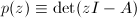的
的特征值是其特征多项式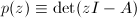的 个根.这些根的集合称为矩阵
个根.这些根的集合称为矩阵 的谱,记为
的谱,记为 .
.
若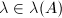,则满足的非零向量 称为的(右)特征向量,满足的非零向量称为左特征向量.
称为的(右)特征向量,满足的非零向量称为左特征向量.
以下是一些关于矩阵分解的结论,其证明可参考一般的线性代数教材,如[1][2].
 其中每个不是阵就是有复共轭特征值的
其中每个不是阵就是有复共轭特征值的在之后的讨论中我们更多地采用酉相似变换 (或正交相似变换) 决定矩阵的特征值,这是由于酉矩阵 (或正交矩阵)具有好的条件数.事实上 而
退化矩阵的Jordan块结构难以从数值上确定,这是因为退化矩阵 (即不能通过相似变换化为对角形的矩阵,也即Jordan标准型中包含高于一阶的Jordan块的矩阵) 构成的集合在中是零测度的,很小的数值扰动就可能造成矩阵块结构很大的变化.幸好我们通常不须通过数值方法确定其Jordan块结构,而在精确线性代数中则有其他方法来确定.
扰动理论
Galois理论告诉我们在 时,矩阵特征值的计算只能是迭代的.因此,我们需要扰动理论来考虑近似特征值和不变子空间.
时,矩阵特征值的计算只能是迭代的.因此,我们需要扰动理论来考虑近似特征值和不变子空间.
 为相应的特征值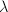的特征向量,且设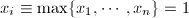.由
得到
记
且令
由特征多项式解对多项式系数,从而对矩阵元的连续依赖性,得到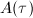的特征值随
为相应的特征值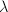的特征向量,且设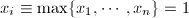.由
得到
记
且令
由特征多项式解对多项式系数,从而对矩阵元的连续依赖性,得到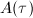的特征值随 连续地变化.当从
连续地变化.当从 连续地变化到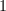时,
连续地变化到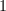时, 的特征值从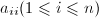连续地变化到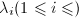,定理因而停留在
的特征值从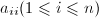连续地变化到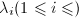,定理因而停留在 个圆盘组成的连通域中.
□
个圆盘组成的连通域中.
□
我们将在之后的"带位移 算法"中看到Gerschgorin的应用.
算法"中看到Gerschgorin的应用.
以上结论为我们选取正交变换而非一般的相似变换提供了说明.
 从而
描述了单特征值的扰动,称为单特征值的条件数.
从而
描述了单特征值的扰动,称为单特征值的条件数.
关于重特征值及不变子空间的扰动理论有以下结果:
- 若是多重特征值,若对应一个
 阶Jordan块,则一般地的扰动将导致的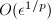的扰动.
阶Jordan块,则一般地的扰动将导致的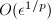的扰动. - 不变子空间对扰动的敏感程度由不变子空间之间的分离程度决定.粗略地说,分离程度越大,对扰动越不敏感.
以上有关结论的证明,可参考[3].
幂迭代
从本节起我们将导出特征值问题的最有效的算法:迭代,并给出其实用形式.
幂法
假设可对角化,且
其中,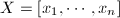,|\lambda_2|\geqslant \cdots \geqslant |\lambda_n|$" class="latex-inline" style="vertical-align: -5px" width="164" height="18">.给出一单位向量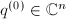,幂法产生如下序列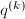:
只要在方向的分量不为 (实用中常通过预先估计保证该分量较大),则容易证明
正交迭代法
幂法的直接推广可用来计算高维的不变子空间.令 是一选定整数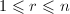.给定具有正交列的
是一选定整数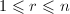.给定具有正交列的 矩阵,正交迭代法产生以下的一列矩阵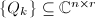:
注意到若
矩阵,正交迭代法产生以下的一列矩阵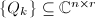:
注意到若 ,这就是幂法,且序列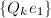正是幂法当初值为时所产生的向量序列.
,这就是幂法,且序列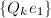正是幂法当初值为时所产生的向量序列.
可以证明,在合理的假设下,由以上算法产生的子空间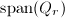按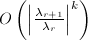收敛到前个特征值对应的不变子空间.
迭代
假设正交迭代中 ,且矩阵的特征值满足|\lambda_2|>\cdots>|\lambda_n|$" class="latex-inline" style="vertical-align: -5px" width="164" height="18">.有Schur分解
并记,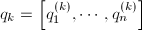.若
从而有
,且矩阵的特征值满足|\lambda_2|>\cdots>|\lambda_n|$" class="latex-inline" style="vertical-align: -5px" width="164" height="18">.有Schur分解
并记,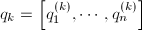.若
从而有 定义的矩阵收敛到上三角阵.于是,可以说,只要初始阵不是退化阵,则正交迭代法就能算出Schur分解.
定义的矩阵收敛到上三角阵.于是,可以说,只要初始阵不是退化阵,则正交迭代法就能算出Schur分解.
注:两同维子空间的距离定义为向两子空间分别做正交投射的线性算子的距离:
可以证明,对于中任意同维子空间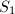与 ,有
上式当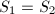时左边等号成立,当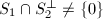时右边等号成立.
,有
上式当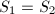时左边等号成立,当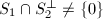时右边等号成立.
考虑怎样从前一个阵直接算出,就产生了如下的迭代算法:
一方面,从正交迭代的步骤以及的定义我们有
 另一方面,
这样,先计算的分解,然后再将两个因子按逆序乘起来就决定了.这就是基本的迭代每一算法步骤的内容.
另一方面,
这样,先计算的分解,然后再将两个因子按逆序乘起来就决定了.这就是基本的迭代每一算法步骤的内容.
以上算法每一步迭代计算量为 ,而且严格下三角的元素按照线性速度收敛(消去).但这些困难可以通过对算法的改进克服.
,而且严格下三角的元素按照线性速度收敛(消去).但这些困难可以通过对算法的改进克服.
实用算法 (1):Hessenberg分解和实Schur型
我们将通过两方面的努力对分解进行加速.粗略地说,一方面通过预先进行Hessenberg分解使之后的每步迭代只有 计算量,另一方面通过位移迭代策略使收敛速度具有平方量级.这将分别在之后两节加以介绍.
计算量,另一方面通过位移迭代策略使收敛速度具有平方量级.这将分别在之后两节加以介绍.
由于大部分特征值和不变子空间问题只涉及实数据,我们将通过迭代化矩阵为实Schur型.
Hessenberg 迭代
设我们合理选取正交阵使
是上Hessenberg阵,则以后每步迭代只需 个Givens旋转依次消去,从而实现分解,而计算也只要次Givens右乘,从而一次迭代计算量仅约为flop.
个Givens旋转依次消去,从而实现分解,而计算也只要次Givens右乘,从而一次迭代计算量仅约为flop.
Hessenberg阵归约
接下来说明如何计算Hessenberg分解:
其中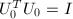.我们的做法是通过一系列Householder变换,其中的作用是将第 列在次对角元以下的元素都化为.
列在次对角元以下的元素都化为.
这一算法需要个flop.若要显式计算,需附加 个flop.第个Householder向量可存放在中.
个flop.第个Householder向量可存放在中.
除利用Householder变换将其化为Hessenberg型外,也可通过非正交的Gauss变换或其他线性变换将其化为友阵型等,但计算特性可能很差,通常并不采用.
实用算法 (2):位移迭代加速策略
不失一般性地,我们可以假定Hessenberg迭代中每个Hessenberg阵是不可约的,即其次对角元素不为.否则的话,在某一步我们有
 其中为方阵,其中
其中为方阵,其中 ,于是问题变成了关于和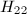的特征值问题,这一过程称为解耦.
,于是问题变成了关于和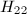的特征值问题,这一过程称为解耦.
实际中,若的次对角元素充分小,我们就进行解耦.例如,在Eispack中如果
(其中 为小常数),就把断定为.这样做的合理性在于整个矩阵已有了量级的舍入误差.
为小常数),就把断定为.这样做的合理性在于整个矩阵已有了量级的舍入误差.
以下讨论迭代中的位移加速策略.
带位移迭代及单步位移策略
令,考虑如下迭代
标量 称为位移.若在迭代过程中固定,并对特征值
称为位移.若在迭代过程中固定,并对特征值 排序
则中第个次对角元素以速率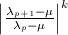收敛于.特别地,若比其他特征值更靠近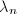,则元素
排序
则中第个次对角元素以速率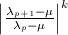收敛于.特别地,若比其他特征值更靠近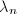,则元素 将会很快变为.如果用特征值作位移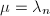,则一步迭代就能将矩阵降阶.
将会很快变为.如果用特征值作位移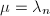,则一步迭代就能将矩阵降阶.
实用中,我们会随时参考有关新的 信息改变.由Gerschgorin定理,可认为是沿对角线的比较好的近似特征值.这样,我们每次取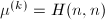,进行单步位移迭代.
若元素收敛为,则其收敛速度很可能是二次的.
双位移策略及隐式双位移策略
若迭代时
的两特征值为复数,则不能近似代替其特征值做迭代.但我们可以逐次应用做位移量进行两次迭代:
于是
注意到 为实矩阵:
其中,
这样,我们可以进行如下计算得到:
为实矩阵:
其中,
这样,我们可以进行如下计算得到:
- 给出实矩阵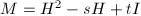.
- 计算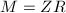的实分解.
- 令.
但第一步计算量是的,因而并非实用.然而,借助下述定理,我们可以将其降至.
 是使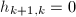的最小正整数,
是使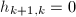的最小正整数, 列 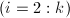,我们知道
由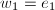得出是上三角阵,于是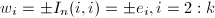.从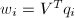和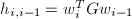可以推出且
列 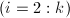,我们知道
由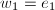得出是上三角阵,于是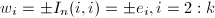.从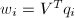和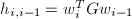可以推出且
如果,则 □
以上定理表明,若和都是不可约上Hessenberg阵,且 和
和 第一列相同,则
第一列相同,则 和
和 "本质上"相等,即
"本质上"相等,即
于是我们每步迭代采用以下步骤:
- 计算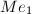,即的第一列.
- 确定Householder矩阵
 使得是
使得是 的倍数.
的倍数. - 计算Householder矩阵使得如果,则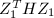是上Hessenberg矩阵.
这样,我们得到和都是Hessenberg阵,且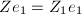,由隐式Q定理知与本质上相等.
由隐式确定首先是Francis(1961)[4]提出的,我们称之为Francis 步.完整的一个Francis 步需要个flop,如果要把显式计算成一个正交阵,则还需额外个flop.
完整的迭代算法
 和比单位舍入误差大的允许误差.本算法计算实Schur分解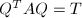.用Hessenberg分解覆盖.如果需要求出和
和比单位舍入误差大的允许误差.本算法计算实Schur分解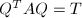.用Hessenberg分解覆盖.如果需要求出和 ,那么储存在中.如果只是需求特征值,则的对角块存在中相应位置.
,那么储存在中.如果只是需求特征值,则的对角块存在中相应位置.
首先计算Hessenberg归约,其中.
然后进行以下步骤,直到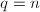:
令所有满足的次对角元素为,找到最大的非负 和最小的非负使得
其中是拟上三角阵且是不可约的.
和最小的非负使得
其中是拟上三角阵且是不可约的.
最后,将中所有特征值为实的 的对角块化为上三角,如有必要累积正交变换相似矩阵.
的对角块化为上三角,如有必要累积正交变换相似矩阵.
如需计算和,此算法需要个flop.如只需算特征值,则只需个flop.这种估计是基于如下经验:平均每做一次低阶或矩阵解耦,仅需约两次Francis迭代.
以下考虑算法的舍入性质.计算得到的实Schur型正交相似于靠近的矩阵,即,其中 且.求得的几乎是正交的:,其中.
且.求得的几乎是正交的:,其中.
不变子空间计算
一旦实Schur分解已算出,几个重要的不变子空间问题就能解决.
由逆迭代计算选定的特征向量
逆迭代就是应用到上的幂方法.只要比其他特征值更靠近,则只要在特征向量方向上的分量不为,则含方向成分就非常多.以上迭代终止的条件是只要余量满足,其中为量级为的常数.
逆迭代可以与算法一起用.在计算得 (Hessenberg归约)及的特征值后,令 ,产生一个向量
,产生一个向量 使.随后令即相应于的特征向量.
使.随后令即相应于的特征向量.
我们只需个flop就能得到的分解矩阵,且一般只需一次迭代就能产生一个足够近似的特征向量.
特征值排序与不变子空间的计算
实Schur分解可给出不变子空间的信息.如果
且,则的前列张成一个与相对应的唯一不变子空间.但对于指定的若干特征值,我们需要一种方法来计算正交矩阵使得是特征值按适当顺序排列的拟上三角阵.
以的情形来说明我们的算法.设
注意到
其中.令是Givens变换使的第2个分量为.记 ,则
,则
当的对角线上有阶块时,变换变得稍微复杂,但没有本质的困难,此处不详细给出.可参见[5][6].
通过进行实Schur分解来计算不变子空间是非常稳定的.
块对角化
在得到矩阵的实Schur标准型之后,可以通过形如的相似变换化为对角块形,其中,为适当分划,满足的Sylvester方程组.
Bartels和Stewart (1972)[7]设计了求解Sylvester方程
的算法,其中,是给定的拟上三角阵且无公共特征值, .
.
令,按列分块.如果,则通过比较各列得到 从而若已知,则我们可解出拟三角阵系统 得到.若,则通过解方程组 同时求得和,上式中.按照重新排列可得到一个只用个flop就可求解的带状方程组.
但要指出,不当的分块可能造成精度丢失.
的方法
令和 是两个
是两个 矩阵.所有形如的矩阵集合称为束 (pencil).束的特征值是集的元素,定义为
矩阵.所有形如的矩阵集合称为束 (pencil).束的特征值是集的元素,定义为
 若且,则称为
若且,则称为 的特征向量.
的特征向量.
关于以上的广义特征值,有如下的定理:
 都为零,则
否则
都为零,则
否则
 的一列非奇异矩阵,对每个,令为
的一列非奇异矩阵,对每个,令为 的Schur分解.令是使为上三角阵的酉阵.由此可见,和都是上三角阵.
的Schur分解.令是使为上三角阵的酉阵.由此可见,和都是上三角阵.
运用Bolzano-Weierstrass定理,我们知道有界列有收敛子列,记.易证明和都是酉阵且和都是上三角.从等式
即得到关于的断言.
□
若,是实矩阵,则对应实Schur分解的下列分解很重要,其证明可参见[8].
Hessenberg三角型
计算矩阵对的广义Schur分解的第一步是通过正交变换化为上Hessenberg型,为上三角型.
- 计算并覆盖,其中为正交阵,且为上三角阵..
- 分别用左右两个Givens变换逐个把次对角线下方元素消去.其中消去而用来使恢复上三角形.
本算法共需个flop.要把,明显算出来还要和个flop.
降阶
在描述迭代时,我们可以假定是不可约的上Hessenberg矩阵,为非奇异上三角矩阵.否则,若,则
![\begin{equation*}
A-\lambda B=
\begin{bmatrix}
A_{11}-\lambda B_{11}& A_{12}-\lambda B_{12}\\
O& A_{22}-\lambda B_{22}
\end{bmatrix}
\begin{array}[c]{l}
k\\
n-k
\end{array}.
\end{equation*}](latex/latex2png-EigenvalueProblem_230617973_.gif) 从而我们只需要处理两个较小的问题和.若,则通过合适的Givens变换,可以把的位置及化为零,从而实现降阶.
从而我们只需要处理两个较小的问题和.若,则通过合适的Givens变换,可以把的位置及化为零,从而实现降阶.
步骤
步骤的基本思想是把,做如下变换:
其中,是上Hessenberg型,是上三角型,和是正交阵.我们通过"巧妙的"零追逐技巧并求助于隐式Q定理可以做到这一点.
令 (上Hessenberg型)且令 ,其中
,其中 ,
, 是下方子矩阵的特征值.球Householder矩阵使为的倍数,之后确定一系列Householder阵,
是下方子矩阵的特征值.球Householder矩阵使为的倍数,之后确定一系列Householder阵, 使,
使, 分别恢复到上Hessenberg型与上三角型.注意到与从而与有相同的第一列,于是由隐式Q定理,"本质上"与直接将Francisco迭代步骤用于所得为同一矩阵.
分别恢复到上Hessenberg型与上三角型.注意到与从而与有相同的第一列,于是由隐式Q定理,"本质上"与直接将Francisco迭代步骤用于所得为同一矩阵.
该算法共需个flop,累积和还需要和个flop.
完整过程
综合以上讨论,我们可以得到类似迭代的迭代:
 分别覆盖
分别覆盖![\begin{align*}
&\text{令所有满足}|a_{i,i-1}|\leqslant \epsilon (|a_{i,i}|+|a_{i-1,i-1}|)\text{的次对角元素为}0.\\
&\text{找到最大值}q\text{和最小值}p\text{使如果}\\
&A=
\begin{bmatrix}
A_{11}& A_{12}& A_{13}\\
O& A_{22}& A_{23}\\
O& O& A_{33}
\end{bmatrix}
\begin{array}[c]{l}
p\\
n-p-q\\
q
\end{array},\\
&\text{则}A_{33}\text{是拟上三角阵,且}A_{22}\text{不可归约为上Hessenberg阵.将}B\text{适当分划为}\\
&B=
\begin{bmatrix}
B_{11}& B_{12}& B_{13}\\
O& B_{22}& B_{23}\\
O& O& B_{33}
\end{bmatrix}
\begin{array}[c]{l}
p\\
n-p-q\\
q
\end{array}.\\
&\text{if}~q<n\\
&~~~~\text{if}~B_{22}\text{奇异,则通过适当的Givens变换化}a_{n-q,n-q-1}\text{为}0.\\
&~~~~\text{else}\\
&~~~~\text{在}A_{22}\text{和}B_{22}\text{上用}QZ\text{步骤}.\\
&~~~~A=\mathrm{diag} (I_p,Q,I_q)^TA\mathrm{diag} (I_p,Z,I_q).\\
&~~~~B=\mathrm{diag} (I_p,Q,I_q)^TB\mathrm{diag} (I_p,Z,I_q).\\
&~~~~\text{end}\\
&\text{end}
\end{align*}](latex/latex2png-EigenvalueProblem_69288141_.gif)
本算法约需个flop,这是基于每个特征值约需 次迭代的经验.算法的速度不受秩亏损的影响.
次迭代的经验.算法的速度不受秩亏损的影响.
可以证明,在 而是精确正交阵, 意义下该算法稳定.
参考文献
[1]高等代数学, 清华大学出版社, 北京, 2004.
[2]The Algebraic Eigenvalue Problem, Clarendon Press, Oxford, UK, 1965.
[3]矩阵计算, 科学出版社, 2001.
[4]The QR Transformation: A Unitary Analogue to the LR Transformation, Parts I and II, Comp. J. 4 (1961), 265-272, 332-345.
[5]An Algorithm for Numerical Determination of the Structure of a General Matrix, BIT 10 (1976), 196-216.
[6]Algorithm 406: HQR3 and EXCHNG: Fortran Subroutines for Calculating and Ordering the Eigenvalues of a Real Upper Hessenberg Matrix, ACM Trans. Math. Soft. 2 (1971).
[7]Solution of the Equation $AX + XB =C$, Comm. ACM 15 (1972), 820-826.
[8]On the Sensitivity of the Eigenvalue Problem $Ax=\lambda Bx$, SIAM J. Num. Anal. 9 (1972), 669-686.